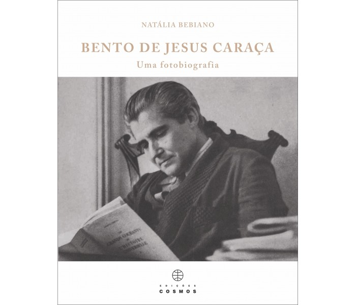

Bento de Jesus Caraça (1901–1980), ligado à tradição moderna portuguesa, destacou-se por obras cujo foco é o contexto rural e a linguagem popular, refletindo preocupações sociais e culturais contemporâneas.
Caraça valorizava o regionalismo, a oralidade e a representação do meio rural e das relações comunitárias.